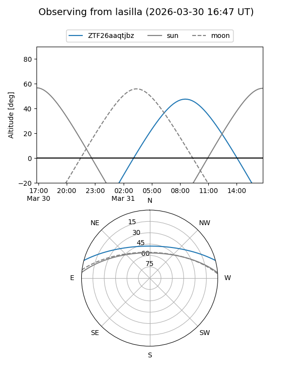
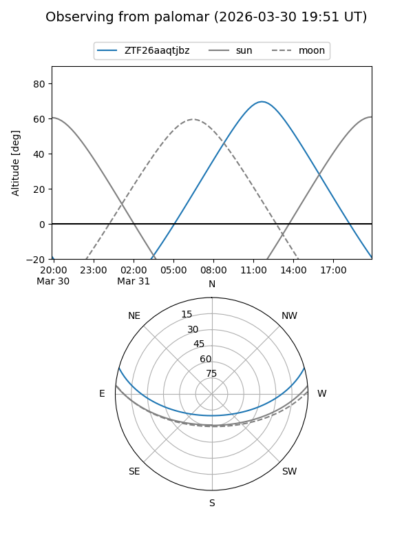

ZTF26aaqtjbz
Target ZTF26aaqtjbz at 2026-03-30 13:08
Aliases and brokers:
FINK: link
Lasair: link
ALeRCE: link
alt names
ZTF26aaqtjbz (ztf,fink_ztf)
Coordinates:
equatorial (ra, dec) = 246.2573,+13.17144
equatorial (HMS+DMS) = 16:25:01.74,+13:10:17.18
galactic (l, b) = (28.4018,+38.36022)
Flags:
Photometry:
last ztfg=16.57
1 ztfg detections
Lightcurve
Visibility


Additional plots